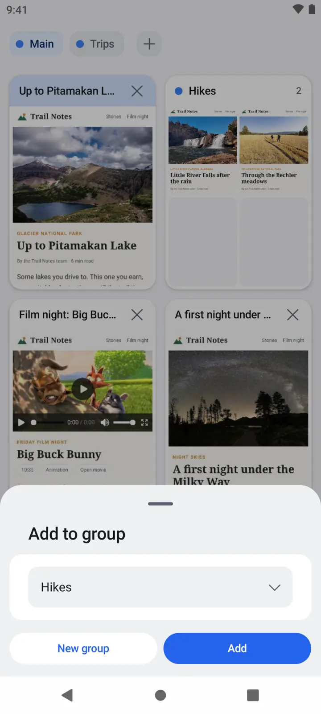
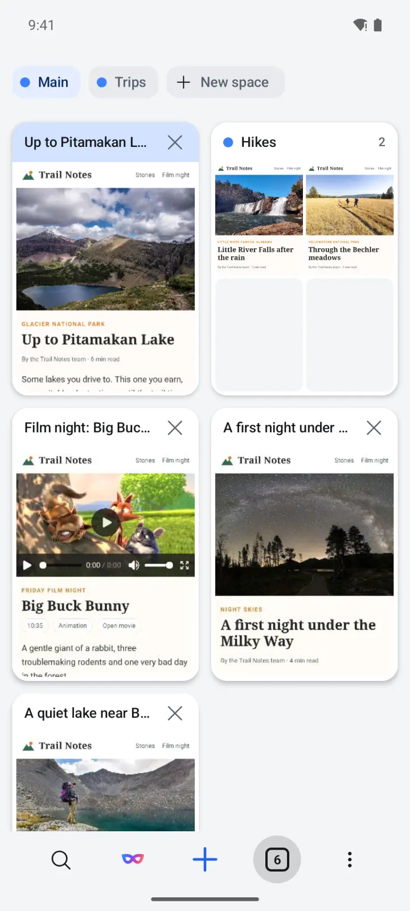
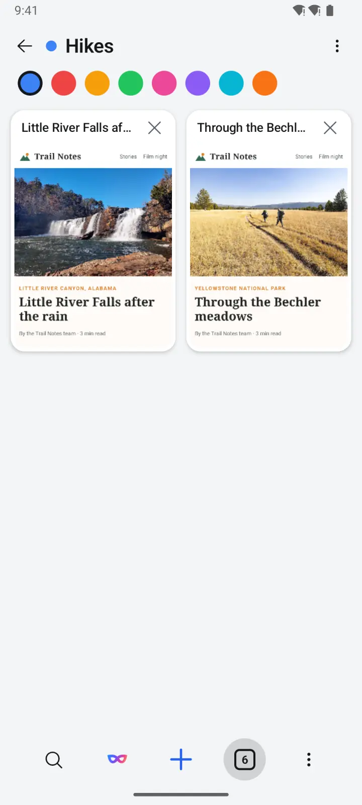
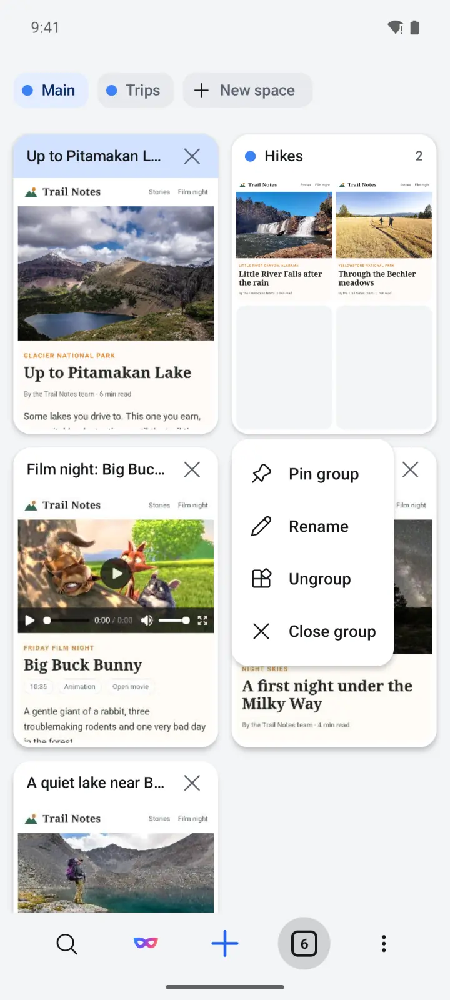
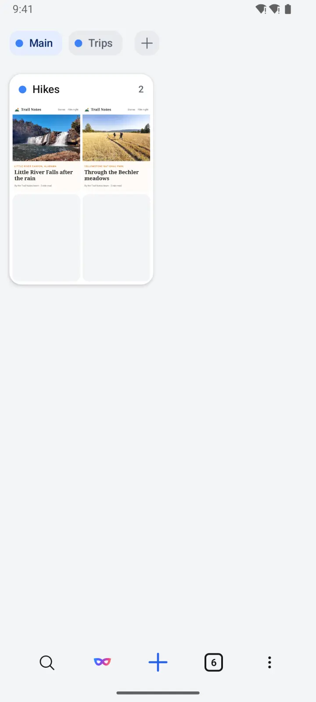

Group your tabs
How-to
Group related tabs, such as pages for a trip, a project or some shopping, into one card on the Tabs screen.
Make a group
- On the Tabs screen, hold a tab and tap Add to group.
- With no groups yet, New group asks for a name. Type one and save it. If you already have groups, pick one, or tap New group.

To group several tabs at once, hold one, tap Select tabs, pick the others, then tap Group on the bar at the bottom.
What a group looks like
A group is one card: a dot in its color, its name, how many tabs it has, and small pictures of up to four of its tabs. Tap it to open it.

Inside a group you'll find:
- a back arrow (TalkBack: All tabs) to go back to all your tabs,
- the group's dot and name; tap the name to rename it,
- ⋮ with the group's options,
- a row of eight colors; tap one to change the group's color,
- the group's tabs, and + to open a new tab right in the group (TalkBack: New tab in group).
To take one tab out, hold it inside the group and tap Remove from group.

Pin, rename, ungroup or close a group
Hold a group's card, or tap ⋮ inside the group:
- Pin group puts the group first on the Tabs screen, before pinned tabs, with a pin by its name. Close all tabs (not private) leaves its tabs alone.
- Rename opens Rename group.
- Ungroup removes the group but keeps its tabs open.
- Close group closes the group and all its tabs, with Undo. Its inactive tabs stay on the Inactive tabs screen, and one you bring back returns to the group. An older copy of a page it closes goes with that page, under the same Undo.

See only your groups
Open the Tabs screen's ⋮ menu and tap Groups. You'll see only the group cards, your regular and private groups together. With none yet it says No groups yet. Long-press a tab to add it to a group.

More in Browsing
- Search, keep a few tabs open, and find your way home
- Search or go to an address
- Copy, paste or share a page's address
- Scan a QR code
- Change your search engine, and search one site directly
- Open, find and close tabs
- Pin, rename or pick several tabs
- Use the start page
- Find words on a page
- Translate a page
- Read an article without the clutter
- Desktop site, zoom, print and save as PDF
- Hold a link, picture or video for more
- When a page asks you something
- Find a page in your history, or clear it
- Bookmarks, folders, import and export
- Links from other apps, and link previews
- The widget and home-screen shortcuts
- Sign in with your password manager